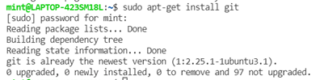
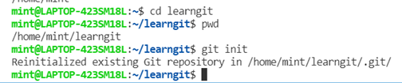
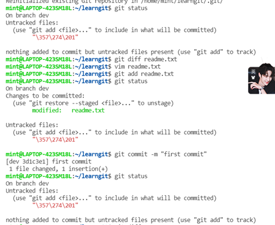
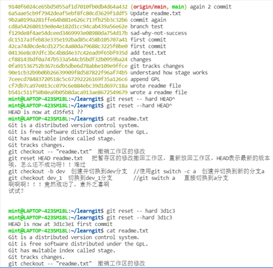
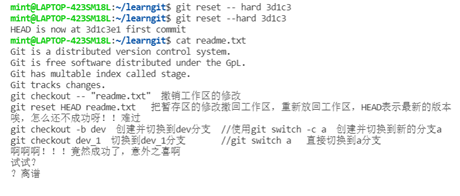
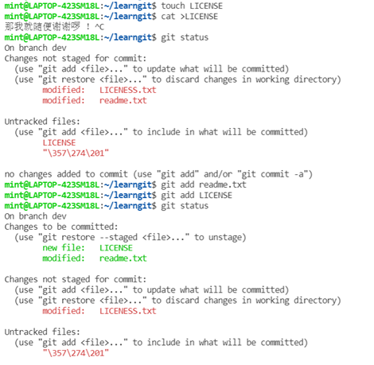
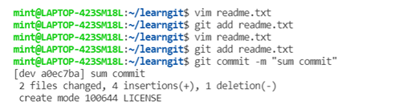
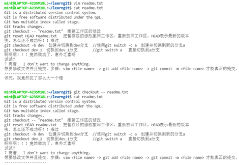
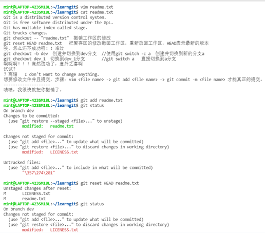
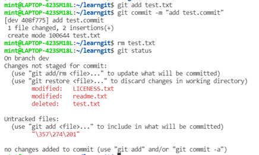
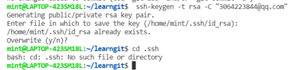
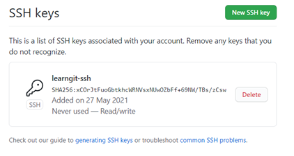
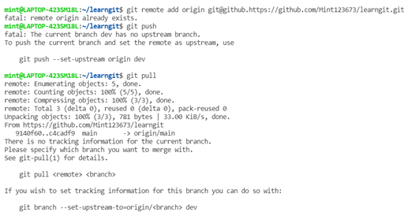
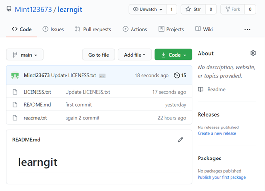
`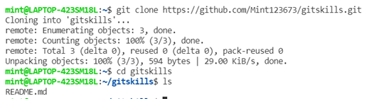

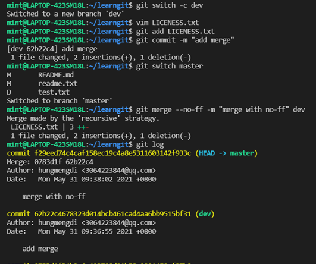
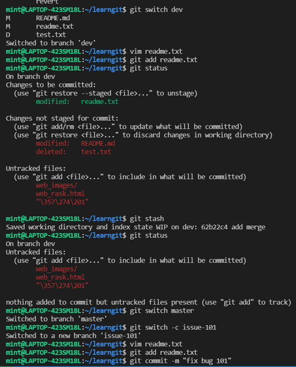
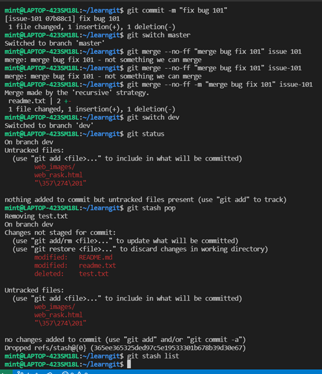
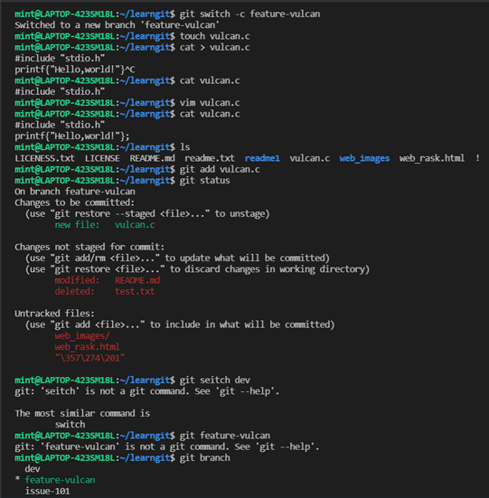
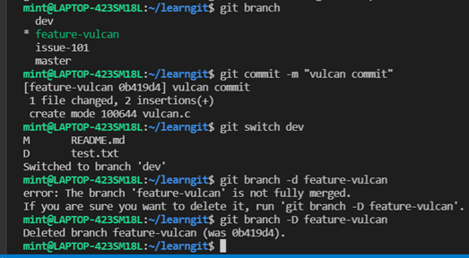
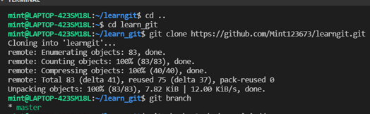
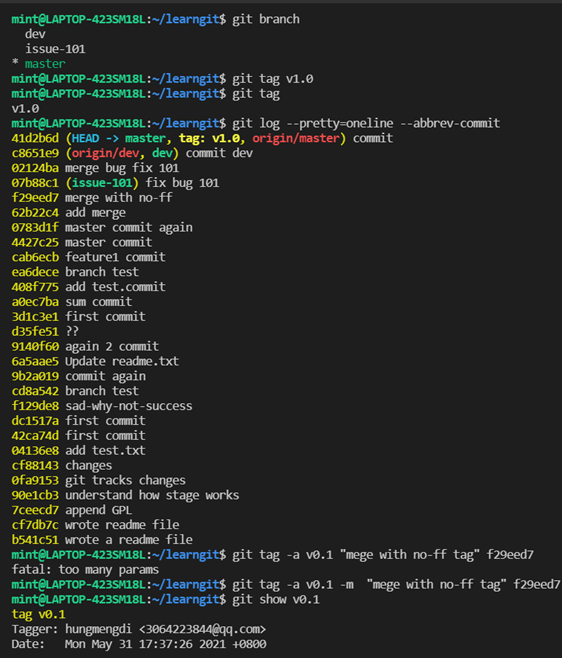
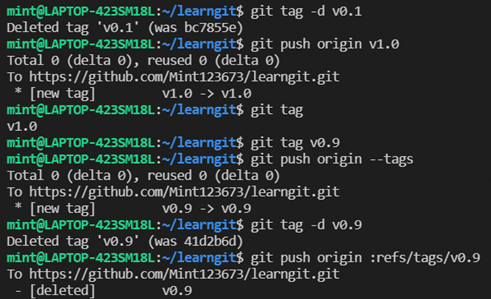
实验过程主要就是按照老师发的有关git的学习资料，按照它的步骤，边做边理解，一步一步的跟着做，如果遇到问题，就上网 搜索错因，然后改正，也可向同学请教。
本次实验我遇到的第一个问题是将本地仓库的内容推到远程仓库，我就按照网页上的步骤，一步一步的做，一开始用的是ssh协议，按照步骤 在GitHub上面弄了ssh key，总之就是做了很多，但是一直显示没有权限访问，试了很多次都没能将本地仓库的内容推到远程仓库。然后 我就放弃了ssh，换成http，在网上搜了关于这个协议该怎么操作才能成功，但是不知道怎么回事，还是多多少少有一些问题，最后经过千难万险， 终于成功了.我解决问题的方法很多时候都是上网搜索解决的。
我遇到的第二个问题是分支管理的解决冲突那里，我觉得真的特别奇怪，明明都按照那个步骤做了，但是它总会出现意想不到错误 ， 合并dev分支的时候，它突然跳成另一个窗口，然后我按照网上的办法:按esc键，再输入:wq 就能退出，但是我试了好几次都不能退出 花了很久的时间搞这个，但是一直弄不好，浪费了很多时间，就先去做后面的了。还有就是编写实验报告的html网址，只能在自己电脑上看见，别人看不见。我的解决办法是 将我在vscode里面写的html,和包括实验截图的文件push到我的远程仓库，但其实操作的时候也遇到了很多问题，其中困扰我最深的是，要想在公网网址中打开你所写的html,你得 给你写的html命名为index.html,才能打开我不知道这是不是一个规定，但是我的就是这种情况，不过也可能是其它情况。
虽然做这个花了很多时间，但是还是有很多收获，因为试的次数多了，也就记得了有关git的一些操作，比如，git status
, git log , git branch, git remove -v ,git switch -c <分支名>（创建分支，并切换到该分支）,git branch -d <分支名>
（删除分支），git branch -D <分支名>，git add